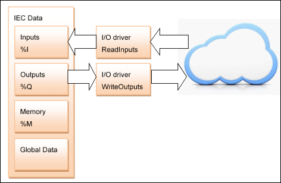

5.8. I/O Drivers¶
An I/O driver is a component that operates and supports a specific hardware or device. Such an I/O driver typically has to perform the following functions:
Physical access to the device
Detection and initialization of the device
Data access to and data exchange with the device (update of IO channels)
Support of diagnostic information of the device
Optional functions like scanning sub devices, parameter access, etc.
The update of IO channels can be illustrated like this:
This is a simplified picture. There can be more than one I/O driver instance. Each instance will update parts of the Inputs and Outputs data. Even with more than one task, there is only one Inputs and one Outputs area.
The cloud symbolizes I/O driver specific data. This can be shared memory of a Hilscher fieldbus card, or the contents of a CANOpen or EtherCAT message.
- 5.8.1. Concept
- 5.8.2. Main I/O Driver Interfaces
- 5.8.3. Optional Interfaces
- 5.8.4. I/O Manager
- 5.8.5. Access to the I/O Configuration
- 5.8.6. I/O Drivers in C/C++
- 5.8.7. Drivers in IEC
- 5.8.8. Diagnostic Information
- 5.8.9. IO Consistency
- 5.8.10. Consistency in the IO Driver
- 5.8.11. External CAN Sync
- 5.8.12. Byte order specific data handling in IO driver